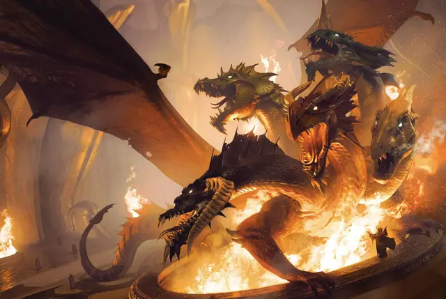

Тиамат
Tiamat
Громадное Исчадие, хаотично-злое, именной НИП

Класс Доспеха 25 (природный доспех)
Хиты 615 (30к20 + 300)
Скорость 60 футов, летая 120 футов
| мод | спас | ||
|---|---|---|---|
| СИЛ | 30 | +10 | +19 |
| ЛОВ | 10 | +0 | +9 |
| ТЕЛ | 30 | +10 | +10 |
| мод | спас | ||
|---|---|---|---|
| ИНТ | 26 | +8 | +8 |
| МДР | 26 | +8 | +17 |
| ХАР | 28 | +9 | +9 |
Навыки Восприятие +26, Магия +17, Религия +17
Иммунитет к урону кислота, огонь, холод, электричество, яд; дробящий, колющий, рубящий от немагических атак
Иммунитет к состояниям ослепление, отравление, очарование, глухота, испуг, ошеломление
Чувства истинное зрение 120 футов, тёмное зрение 240 футов, пассивное Восприятие 36
Языки Общий, Драконий, Инфернальный
Опасность 30 (155000 опыта)
Бонус мастерства +9
Особенности
Развоплощение. . Когда хиты Тиамат опускаются до 0 или она должна умереть, её тело уничтожается, но сущность отправляется назад в её домен в Девяти Преисподнях и она вновь на некоторое время теряет способность принять физическую форму.
Врождённое колдовство (3/день). . Тиамат может творить божественное слово [divine word] (Сл спасброска от заклинания 26). Её базовой характеристикой является Харизма.
Легендарное сопротивление (5/день). . Если Тиамат проваливает спасбросок, она может вместо этого сделать спасбросок успешным.
Ограниченный иммунитет к магии. . Тиамат обладает иммунитетом к заклинаниям уровня 6 или ниже, если только она не захочет стать подверженной таковым. Она также получает преимущество на спасброски против других заклинаний и магических эффектов.
Магическое оружие. . Атаки оружием Тиамат считаются магическими.
Несколько голов. . Тиамат может предпринимать реакцию каждый ход, нежели одну за раунд. Она также получает преимущество на спасброски против потери сознания. Если она проваливает спасбросок против ошеломления, она тратит впустую одно не потраченное легендарное действие.
Регенерация. . Тиамат восстанавливает 30 хитов в начале своего хода.
Действия
Мультиатака. Тиамат может использовать своё Пугающее присутствие. После этого она совершает три атаки: две когтями и одну хвостом.
Коготь. . Рукопашная атака оружием: +19 к попаданию, досягаемость 15 футов, одна цель. Попадание: 24 (4к6+10) рубящего урона.
Хвост. . Рукопашная атака оружием: +19 к попаданию, досягаемость 25 футов, одна цель. Попадание: 28 (4к8+10) колющего урона.
Пугающее присутствие. . Каждое существо по выбору Тиамат в пределах 240 футов от Тиамат, и знающее о ее присутствии, должно преуспеть в спасброске Мудрости Сл 26 или стать испуганным на 1 минуту. Существо может повторять спасбросок в конце каждого своего хода, при успехе завершая этот эффект для себя. Если существо преуспело в спасброске или эффект завершился, это существо иммунно к Пугающему присутствию Тиамат на следующие 24 часа.
Легендарные действия
Тиамат может предпринимать 5 легендарных действий, выбирая из вариантов ниже. Лишь одно легендарное действие может быть использовано за раз и лишь в конце хода другого существа. Тиамат восполняет потраченные легендарные действия в начале своего хода.
Варианты легендарных действий Тиамат связаны с пятью её драконьими головами (укус и оружие дыхания каждой). Как только Тиамат выполняет легендарное действие одной из голов, до начала своего следующего хода она не может предпринимать ещё одно действие, связанное с этой же головой.
Укус. . Рукопашная атака оружием: +19 к попаданию, досягаемость 20 футов, одна цель. Попадание: 32 (4к10+10) рубящего урона плюс 14 (4к6) (головой чёрного дракона) урона кислотой, (головой синего дракона) урона электричеством, (головой зелёного дракона) урона ядом, (головой красного дракона) урона огнём или (головой белого дракона) урона холодом.
Голова чёрного дракона. . Кислотное дыхание (стоит 2 действия). Тиамат выдыхает линию кислоты длиной 120 футов и шириной 10 футов. Каждое существо на этой линии должно совершить спасбросок Ловкости Сл 27. При неудаче оно получит 67 (15к8) урона кислотой, а при успехе — лишь половину этого урона.
Голова синего дракона. Электрическое дыхание (стоит 2 действия). Тиамат выдыхает молнию длиной 120 футов и шириной 10 футов. Каждое существо на этой линии должно совершить спасбросок Ловкости Сл 27. При неудаче оно получит 88 (16к10) урона электричеством, а при успехе — лишь половину этого урона.
Голова зелёного дракона. Ядовитое дыхание (стоит 2 действия). Тиамат выдыхает 90-футовый конус ядовитого газа. Каждое существо в этой области должно совершить спасбросок Телосложения Сл 27. При неудаче оно получит 77 (22к6) урона ядом, а при успехе — лишь половину этого урона.
Голова красного дракона. Огненное дыхание (стоит 2 действия). Тиамат выдыхает 90-футовый конус огня. Каждое существо в этой области должно совершить спасбросок Ловкости Сл 27. При неудаче оно получит 91 (26к6) урона огнём, а при успехе — лишь половину этого урона.
Голова белого дракона. Ледяное дыхание (стоит 2 действия). Тиамат выдыхает 90-футовый конус ледяного воздуха. Каждое существо в этой области должно совершить спасбросок Ловкости Сл 27. При неудаче оно получит 72 (16к8) урона холодом, а при успехе — лишь половину этого урона.